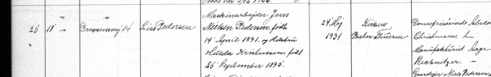

Medie · images_liss-daab-silkeborg-1931.jpg
Farmor Liss' fødsel, Silkeborg 1931

Silkeborg kirkebog, fødte piger 1931 nr. 25: 'Lis Pedersen', født 18. april på Drewsensvej 14. Forældre: maskinarbejder Jens Nielsen Pedersen og Hulda Kristensen.